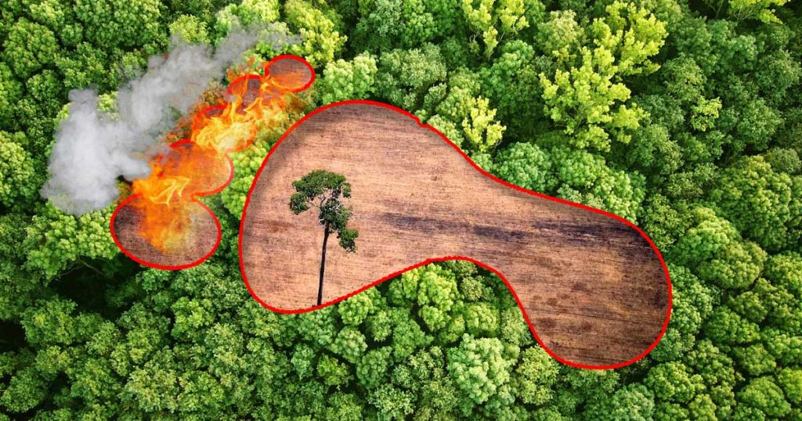
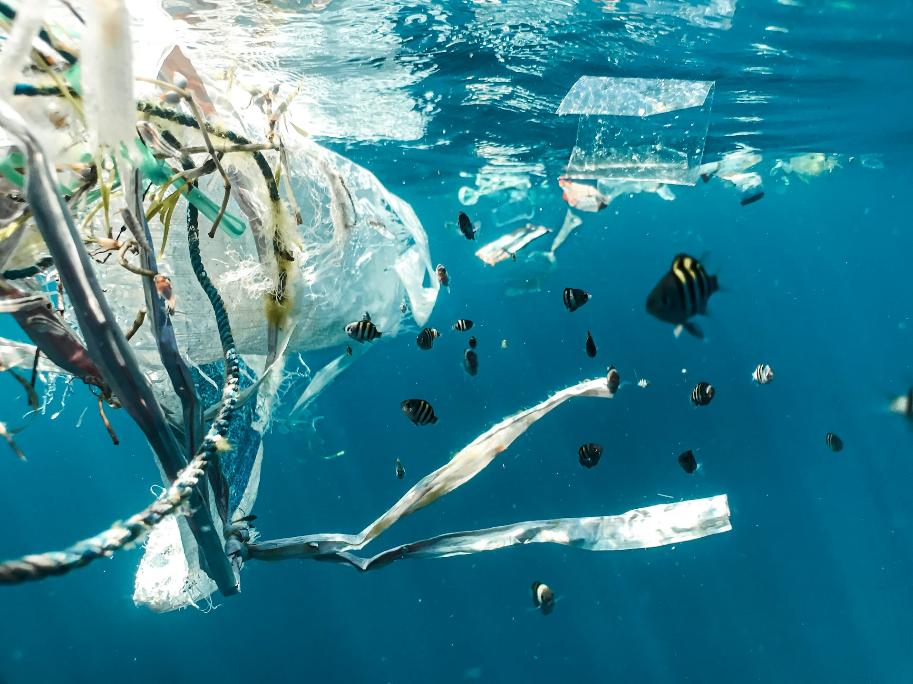

Életmódunk fenntartásához természeti erőforrásokra van szükségünk. Ennek mértékét mutatja meg az ökológiai lábnyom. A mindennapi tevékenységeink: a közlekedés, a vásárlás, étkezéseink és a áramfogyasztás mind befolyásolják méretét. Minél több erőforrást használunk annál nagyobb terhet jelentünk a Föld anyára. Ha kíváncsi vagy a saját saját ökológiai lábnyomodra, a menüsávban található kalkulátorral megbecsülheted azt!
A mindennapi tevékenységeink során a levegőbe, a vizekbe és a talajba is kerülhetnek káros anyagok. A közlekedés és az ipar légszennyezést okozhat, míg a nem megfelelően kezelt hulladék a folyókat és az óceánokat veszélyezteti. A szennyezés károsíthatja az élővilágot és az emberi egészséget is. A tudatos fogyasztással, a hulladék csökkentésével és az energiatakarékossággal mi is tehetünk ellene.

Rövidebb utakra válaszd a gyaloglást vagy a kerékpárt. Ha teheted, használd a tömegközlekedést!
Csak azt vásárold meg, amire valóban szükséged van. Nézz körbe a használt piacon!
Részesítsd előnyben a helyi és szezonális alapanyagokat! Tervezd meg az étkezéseidet, és kerüld az élelmiszer-pazarlást!
Kapcsold le a villanyt, ha nincs rá szükséged, és húzd ki a nem használt eszközöket!